Uputstvo za korišćenje Validacija i čišćenje IZIS XML faktura zdravstva
Verzija programa 1.2.0 · novembar 2026. Slike prikazuju program u tamnoj temi, nad sintetičkim (izmišljenim) ili anonimizovanim podacima.
Sadržaj
Šta program radi
Pokretanje programa
Otvaranje i zatvaranje fajla
Validacija fajla
Čišćenje faktura (SHMP)
Podešavanja
Šeme
Prečice i „O programu”
Konzolni alat (za napredne korisnike)
Šta program radi
XML Validator radi sa XML fakturama zdravstva (IZIS, šema fakture-zdravstva.xsd) i ima dvije glavne funkcije, svaku u svom tabu:
Validacija: provjera fajla prema XSD šemi FZO-a, sa svim greškama (linija, kolona, opis).
Čišćenje faktura: izbacivanje faktura koje FZO ne prihvata po pravilu Službe hitne medicinske pomoći (SHMP), uz vašu kontrolu nad svakom fakturom i detaljan izvještaj.
Kako čitati slike: crveni okvir na slici označava dio programa o kojem korak govori (dugme, polje, tabelu ili poruku).
Ulazni fajl se nikad ne mijenja. Rezultat čišćenja i izmjene uvijek se čuvaju u novi fajl. Ništa se ne briše tiho: svaka obrisana, preskočena, uređena ili popravljena faktura je navedena u izvještaju.
1. Pokretanje programa
Korak 1.1 – Pokrenite program
Kopirajte XmlValidator.exe u bilo koji folder (npr. na radnu površinu). Instalacija nije potrebna, a nije potreban ni instaliran .NET.
Pokrenite ga duplim klikom. Program se otvara preko cijelog ekrana. Prvo pokretanje traje nekoliko sekundi, a svako sljedeće oko dvije.
Ako Windows prikaže upozorenje „Windows protected your PC”, kliknite More info → Run anyway (program nije digitalno potpisan).
Otvara se početni ekran. Gore je traka sa komandama (Otvori…, Sačuvaj kao…, Zatvori, Nedavni fajlovi, Podešavanja, pomoć ?), ispod su tabovi Validacija i Čišćenje faktura (izabran tab je svijetlija kartica sa plavom trakom na vrhu), a dole statusna traka sa aktivnom šemom.
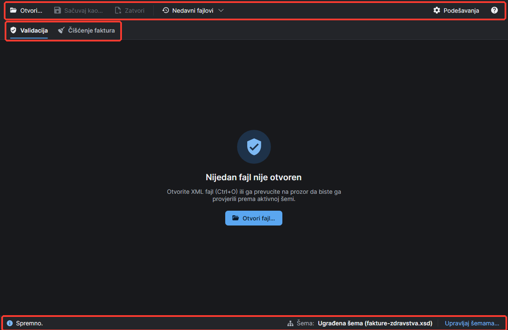
Slika 1. Početni ekran prije otvaranja fajla.
Linux: program XmlValidator nema ekstenziju. Prvo mu dajte dozvolu za pokretanje (chmod +x XmlValidator), pa ga pokrenite sa ./XmlValidator ili duplim klikom.
2. Otvaranje i zatvaranje fajla
Korak 2.1 – Otvorite XML fajl
Fajl možete otvoriti na tri načina:
kliknite Otvori… (ili Ctrl+O) i izaberite fajl;
prevucite fajl mišem iz Windows Explorera na prozor programa (slika 2);
izaberite fajl iz liste Nedavni fajlovi (slika 3).
Otvoren fajl je dostupan u oba taba.
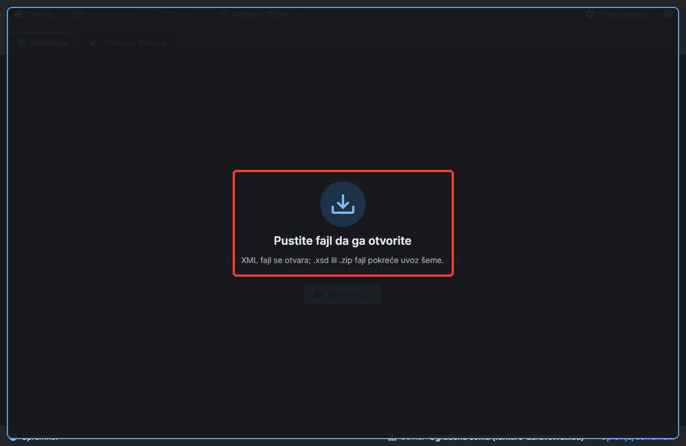
Slika 2. Fajl prevučen na prozor: pustite ga i program ga otvara.
Korak 2.2 – Nedavni fajlovi
Kliknite Nedavni fajlovi i izaberite jedan od posljednje otvorenih fajlova. Fajl koji više ne postoji uklanja se iz liste uz poruku.
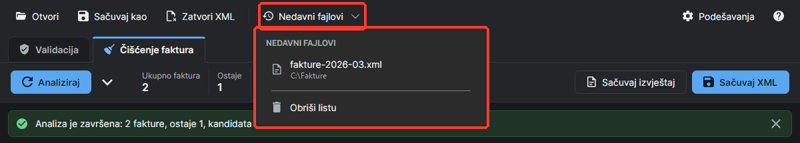
Slika 3. Lista nedavnih fajlova.
Korak 2.3 – Zatvorite fajl bez zatvaranja programa
Kliknite Zatvori u traci (ili Ctrl+W). Fajl se zatvara u oba taba, a program ostaje otvoren za sljedeći fajl. Ako imate nesačuvane izmjene ili odluke o čišćenju, program prvo pita da li da ih odbaci. Fajl na disku se ne dira.
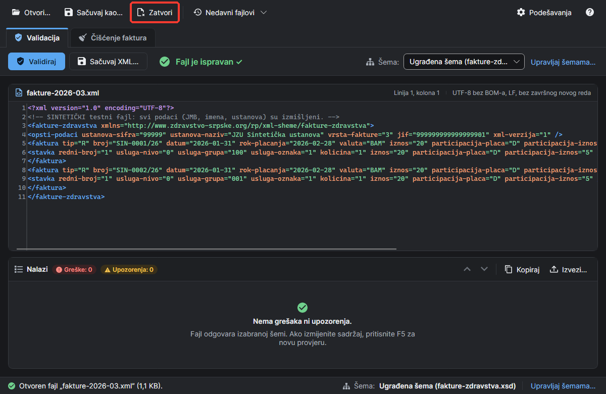
Slika 4. Kad je fajl otvoren, dugme „Zatvori” je aktivno.
3. Validacija fajla
Korak 3.1 – Pokrenite validaciju
Otvorite fajl i izaberite tab Validacija (Ctrl+1).
Kliknite Validiraj (F5). Fajl se provjerava prema šemi izabranoj desno u polju Šema.
Ako je fajl ispravan, pojavljuje se zelena poruka Fajl je ispravan.
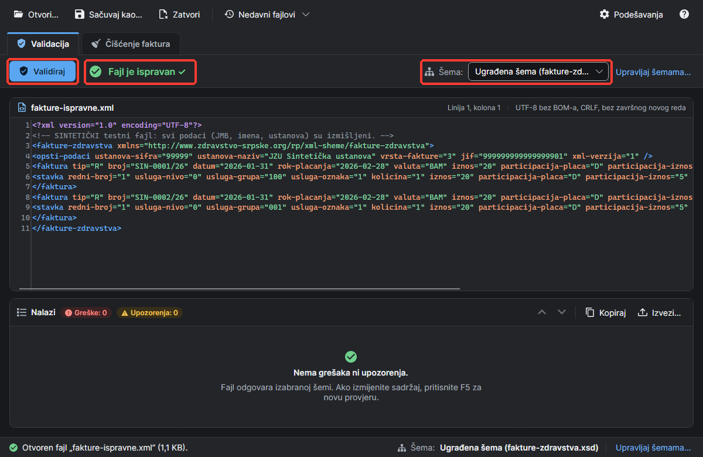
Slika 5. Ispravan fajl.
Korak 3.2 – Pregledajte greške
Ako fajl ima grešaka, crveno piše koliko ih je i na koliko faktura (npr. Pronađeno 4 greške u 3 fakture; jedna faktura može imati više grešaka, a greške u zaglavlju fajla se navode kao „van faktura”). Sporne linije su označene u editoru, a sve greške su u tabeli Nalazi (ozbiljnost, linija, kolona, vrsta i poruka).
Poruka kaže gdje je problem (npr. „Stavka 1 fakture SIN-1”), šta nije u redu i šta treba upisati, npr. „polje „usluga-nivo” (nivo usluge) je prazno. Upišite broj nivoa usluge, ili obrišite cijeli red stavke ako ta usluga ne treba da bude u fakturi.” Kad zadržite miš iznad poruke, vidi se i originalni tehnički opis greške (na engleskom), koji može zatrebati podršci.
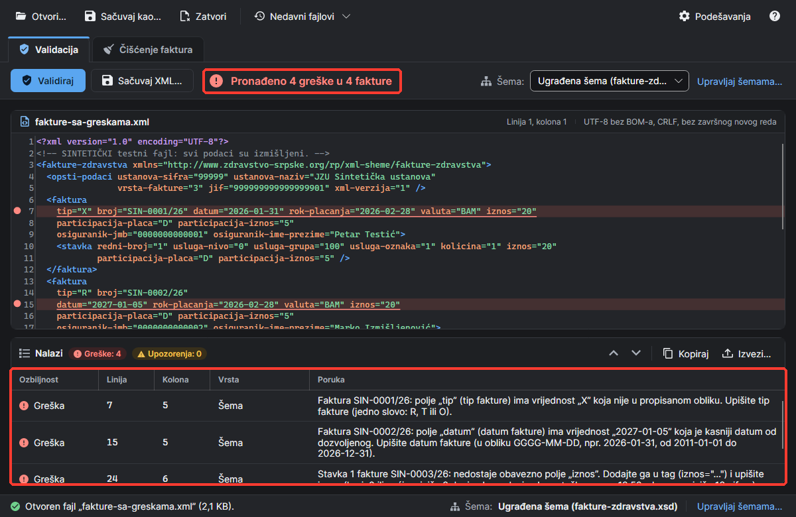
Slika 6. Fajl sa četiri greške.
Korak 3.3 – Idite na mjesto greške
Kliknite grešku u tabeli Nalazi: editor skače na tu liniju i kolonu i označava mjesto greške. Cijela poruka se vidi u koloni Poruka, a kad zadržite pokazivač miša nad porukom, prikazuje se i originalni tehnički opis. Strelicama iznad tabele, ili sa F8 i Shift+F8, prelazite na sljedeću i prethodnu grešku. Kopiraj kopira nalaze, a Izvezi… ih čuva u .txt ili .csv fajl.
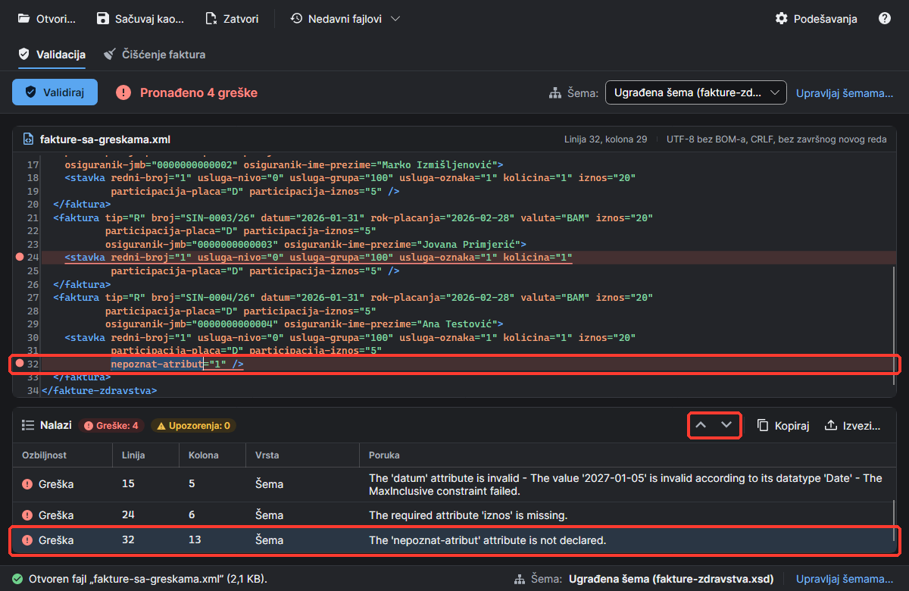
Slika 7. Izabrana greška je označena u editoru; strelicama iznad tabele prelazite na sljedeću i prethodnu grešku.
Korak 3.4 – Ispravite fajl i sačuvajte ga kao novi
Ispravite tekst direktno u editoru. Fajl dobija oznaku izmijenjeno, a program napominje da treba ponovo validirati (F5).
Kliknite Validiraj da provjerite ispravku.
Kliknite Sačuvaj XML… na traci taba (pored dugmeta Validiraj), ili Sačuvaj kao… gore (Ctrl+Shift+S), i izaberite novo ime fajla. Program predlaže ime sa dodatkom _ispravljen (npr. fakture_ispravljen.xml) i ne dozvoljava čuvanje preko ulaznog fajla. Čišćenje faktura za ovo nije potrebno.
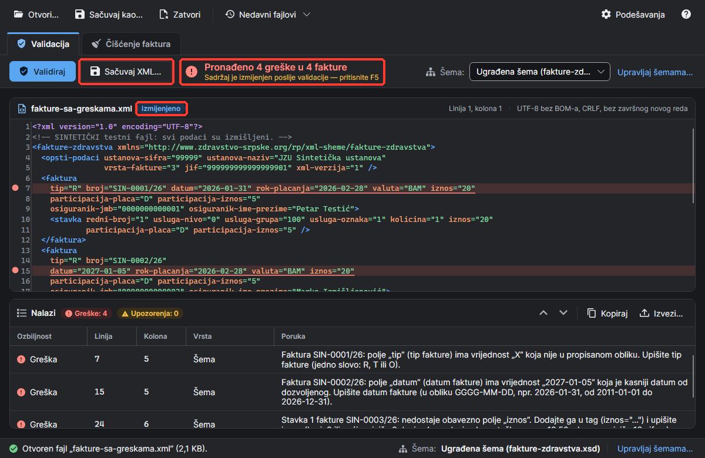
Slika 8. Sadržaj je izmijenjen poslije validacije; dugme „Sačuvaj XML…” čuva ispravljen fajl.
4. Čišćenje faktura (SHMP)
Pravilo čišćenja
FZO prihvata usluge Službe hitne medicinske pomoći (SHMP) (usluga-grupa 100) i usluge drugih službi samo za pacijente koji su pregledani u SHMP. Pregled je usluga usluga-oznaka 183 u grupi 100. Pacijent se prepoznaje po JMB-u (osiguranik-jmb), na bilo kojoj fakturi u fajlu i bez obzira na datum. Svaka faktura dobija jednu kategoriju:
Kategorija
Značenje
Šta se radi
Usluga SHMP
faktura ima bar jednu uslugu iz grupe 100
ostaje
Pregledan u SHMP
samo usluge drugih službi, ali isti pacijent ima pregled 183 u SHMP
ostaje
Bez pregleda u SHMP
samo usluge drugih službi, a pacijent nigdje nema pregled u SHMP (ili faktura nema JMB)
kandidat: Obriši, Preskoči ili Prikaži
Prazna faktura
faktura nema nijednu stavku
kandidat: Obriši, Preskoči ili Prikaži
Sumnjiv blok
granica fakture nije jasna (npr. nedostaje </faktura>)
morate odlučiti sami
Čišćenje nije automatsko. Kad otvorite fajl, program ga samo analizira i pokazuje šta bi se uradilo; ništa se ne mijenja. Očišćen fajl nastaje tek kad kliknete Sačuvaj očišćeni fajl… (korak 4.8), i to uvijek kao novi fajl.
Korak 4.1 – Pregledajte analizu
Otvorite fajl i izaberite tab Čišćenje faktura (Ctrl+2). Analiza se pokreće sama; ponovo je pokrećete sa Analiziraj (F5).
Gore je sažetak: Ukupno faktura, koliko Ostaje, koliko je Kandidata za brisanje, koliko Čeka odluku, broj Popravki i Upozorenja.
U tabeli je svaka faktura sa statusom, brojem, datumom, JMB-om, grupama, akcijom, kategorijom i razlogom. Klikom na red vidite tekst fakture ispod tabele.
Polje za pretragu traži po broju fakture ili JMB-u, a padajući meni filtrira: Sve, Samo kandidati, Samo upozorenja, Čeka odluku.
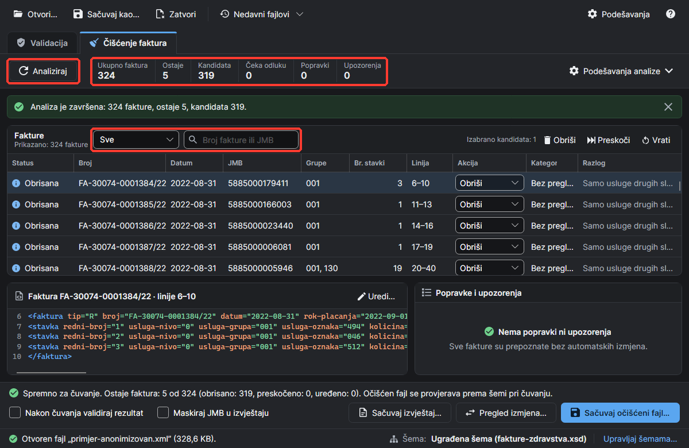
Slika 9. Rezultat analize (anonimizovani primjer: od 324 fakture ostaje 5).
Korak 4.2 – Podešavanja analize
Kliknite Podešavanja analize da otvorite traku sa podešavanjima:
Grupa SHMP: šifra grupe usluga SHMP (100);
Prazna faktura i Bez pregleda u SHMP: podrazumijevana akcija za te fakture (Obriši, Preskoči ili Prikaži);
Automatske popravke: popravka polomljenih zagrada u tagovima;
Podrazumijevano: vraća grupu 100, pregled 183, Obriši i popravke, pa ponovo analizira.
Promjena akcije važi odmah. Promjena grupe ili popravki traži novu analizu (F5), a čuvanje je blokirano dok je ne pokrenete.
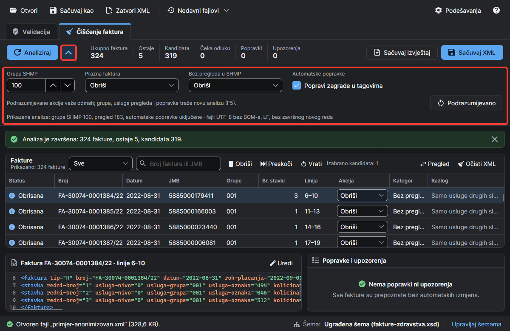
Slika 10. Otvorena traka „Podešavanja analize”.
Korak 4.3 – Akcija „Prikaži”: odlučite za svaku fakturu
Ako za kategoriju izaberete Prikaži (odluka po fakturi), te fakture ostaju bez akcije i dobijaju status Čeka odluku. Izaberite filter Čeka odluku, pa svakoj fakturi u koloni Akcija izaberite Obriši, Preskoči ili Uredi. Čuvanje je moguće tek kad sve fakture imaju odluku; link Prikaži fakturu dole vodi na prvu koja čeka.
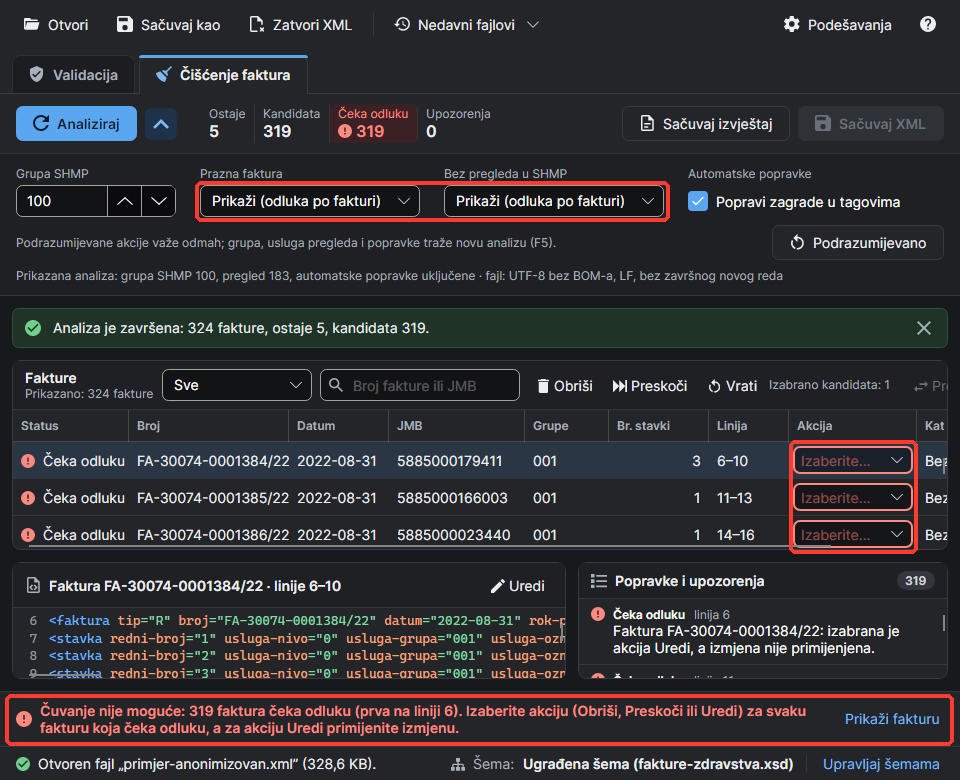
Slika 11. Uz „Prikaži” fakture čekaju vašu odluku.
Korak 4.4 – Promijenite akciju za jednu ili više faktura
Za jednu fakturu izaberite akciju u koloni Akcija.
Za više faktura označite redove (Ctrl+klik ili Shift+klik), pa kliknite Obriši, Preskoči ili Vrati (vraća podrazumijevanu akciju) iznad tabele.
Preskoči znači da faktura ostaje u fajlu netaknuta, a u izvještaju se vodi kao preskočena.
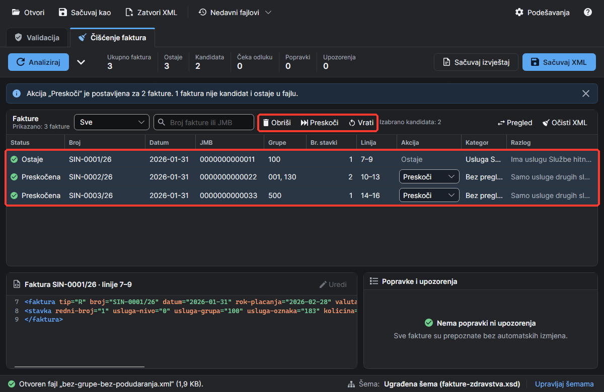
Slika 12. Akcija „Preskoči” postavljena za dvije označene fakture.
Korak 4.5 – Riješite sumnjiv blok
Sumnjiv blok je dio fajla u kojem granica fakture nije jasna, npr. faktura bez zatvarajućeg taga koja „guta” sljedeću. Program o njemu ne odlučuje sam: blok je označen crveno (Čeka odluku), a čuvanje nije moguće dok mu ne izaberete akciju. Pogledajte tekst bloka ispod tabele i izaberite Obriši, Preskoči ili Uredi.
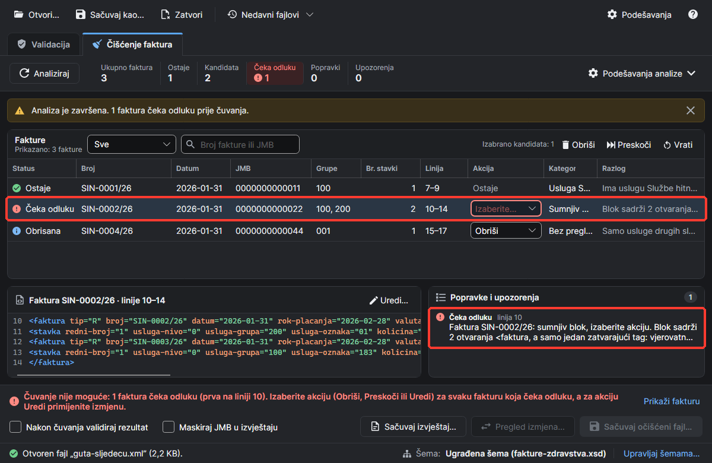
Slika 13. Sumnjiv blok čeka odluku.
Korak 4.6 – Uredite fakturu ručno
Izaberite akciju Uredi (ili kliknite Uredi… iznad teksta fakture).
Ispravite tekst fakture u editoru.
Kliknite Primijeni. Program provjerava da je tekst ispravan XML i ponovo klasifikuje fakturu. Odustani odbacuje izmjenu.
Ručna izmjena (staro i novo stanje) bilježi se u izvještaju.
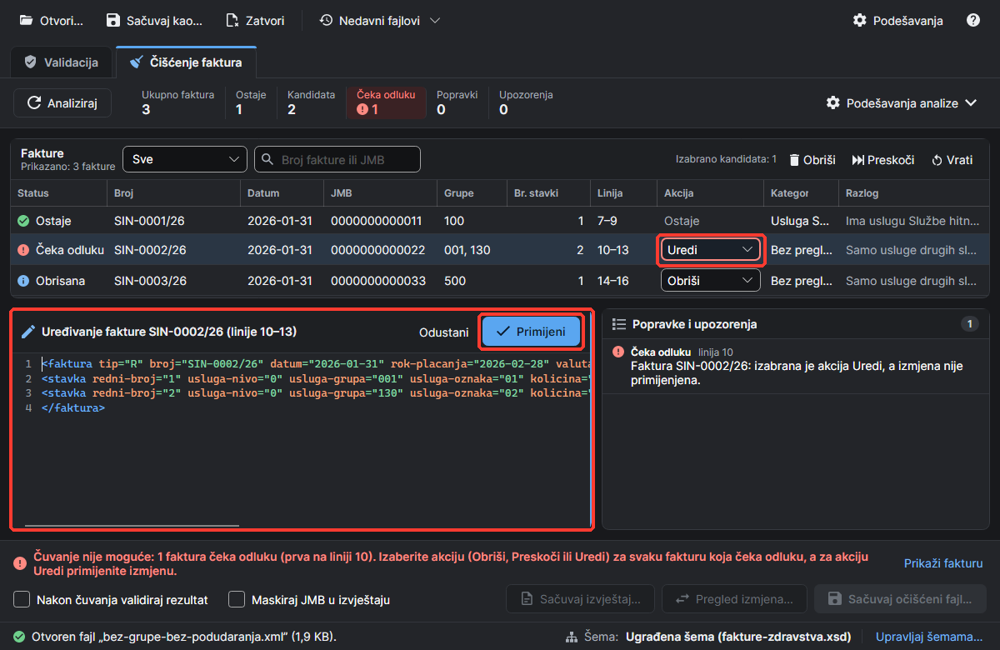
Slika 14. Ručno uređivanje fakture.
Korak 4.7 – Provjerite automatske popravke
Program sam popravlja polomljene zagrade (npr. </faktura bez >). Svaka popravka je u listi Popravke i upozorenja sa brojem linije; klik na nju vodi na fakturu. Popravke se mogu isključiti u podešavanjima analize.
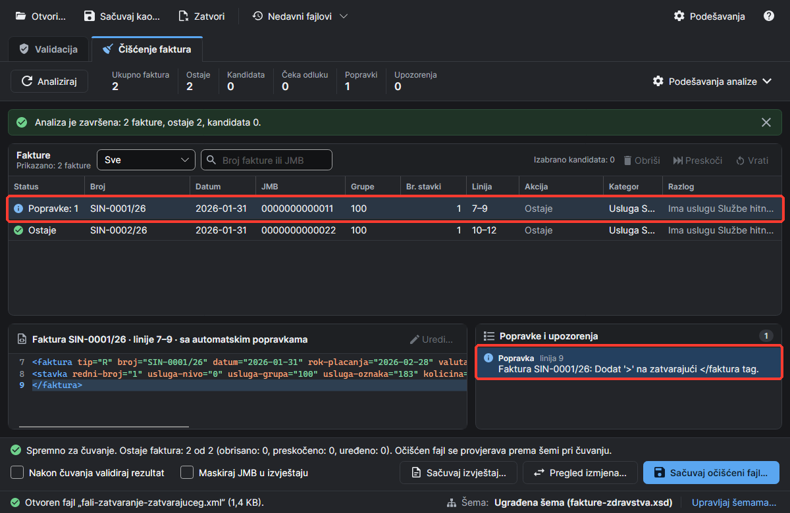
Slika 15. Faktura sa automatskom popravkom.
Korak 4.8 – Pregledajte izmjene i sačuvajte očišćen fajl
Po želji kliknite Pregled izmjena… (Ctrl+D) da vidite šta se briše, mijenja ili popravlja, bez čuvanja.
Kliknite Sačuvaj očišćeni fajl… (Ctrl+S). Prvo se prikazuje pregled izmjena sa rezultatom provjere prema šemi. Za svaku izmjenu vidite ulaz lijevo i izlaz desno.
Kliknite Sačuvaj… i izaberite ime fajla. Predlaže se <ime>_ociscen.xml pored ulaza.
Ako želite da se očišćen fajl odmah provjeri, uključite Nakon čuvanja validiraj rezultat.
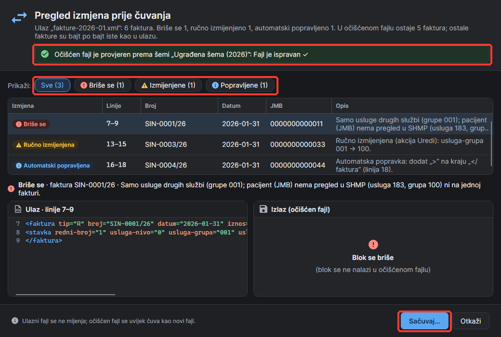
Slika 16. Pregled izmjena prije čuvanja.
Korak 4.9 – Sačuvajte izvještaj
Kliknite Sačuvaj izvještaj… (Ctrl+R) i izaberite .txt (za čitanje) ili .csv (za Excel). Izvještaj sadrži svaku obrisanu, preskočenu, uređenu i popravljenu fakturu sa razlogom. Ako izvještaj šaljete dalje, uključite Maskiraj JMB u izvještaju (npr. 0101990******). Oba elementa su u donjoj traci taba.
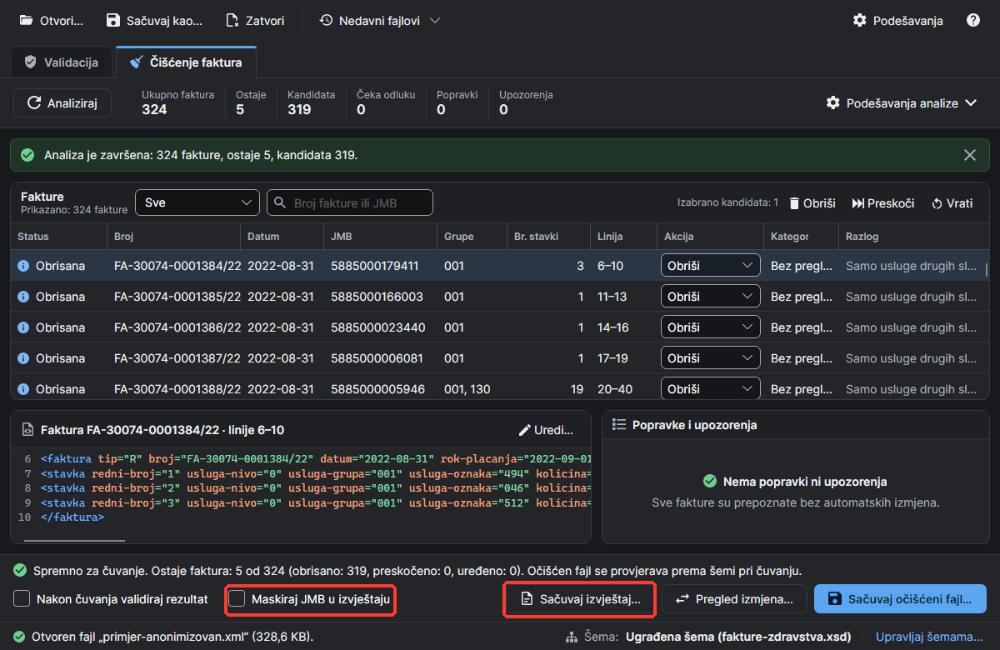
Slika 16a. „Sačuvaj izvještaj…” i „Maskiraj JMB u izvještaju”.
5. Podešavanja
Korak 5.1 – Opšta podešavanja
Kliknite Podešavanja (Ctrl+,), stranica Opšte. Izmjene se čuvaju odmah.
Tema: svijetla, tamna ili prema sistemu.
Grupa usluga SHMP (usluga-grupa): 100 = Služba hitne medicinske pomoći.
Usluga pregleda u SHMP (usluga-oznaka): 183 = pregled. Pacijent sa ovom uslugom u grupi SHMP smatra se pregledanim u SHMP.
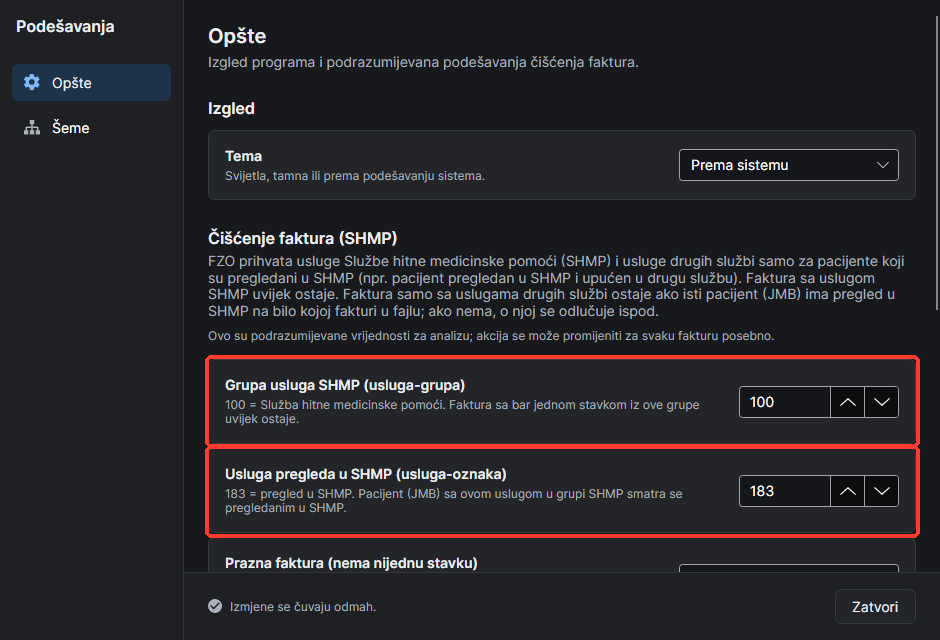
Slika 17. Podešavanja → Opšte.
Korak 5.2 – Podrazumijevane akcije i popravke
Prazna faktura i Faktura samo sa uslugama drugih službi, pacijent nije pregledan u SHMP: Obriši, Preskoči ili Prikaži (odluka po fakturi).
Automatske popravke zagrada: Uključeno ili isključeno.
Vrati podrazumijevano: vraća sva podešavanja čišćenja na početne vrijednosti.
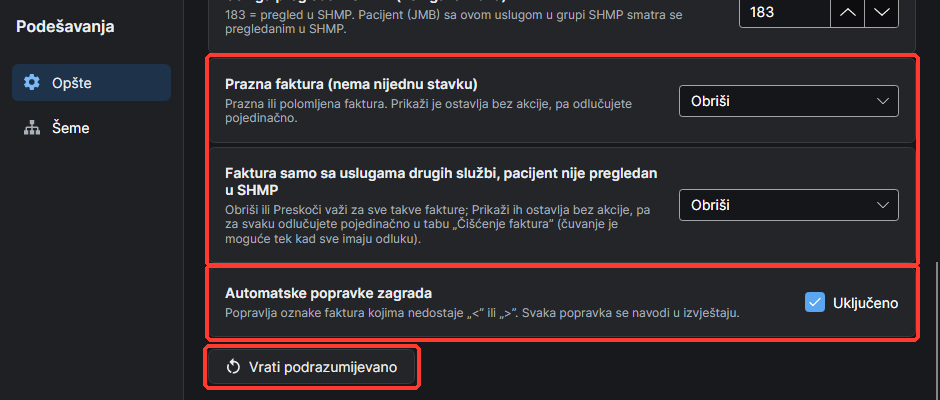
Slika 18. Podrazumijevane akcije i automatske popravke.
6. Šeme
Korak 6.1 – Pregled šema
U Podešavanja → Šeme (ili klikom na Upravljaj šemama… u statusnoj traci) vidite sve šeme. Ugrađena šema je dio programa, uvijek je dostupna i ne može se obrisati. Ako uvezena aktivna šema nedostaje ili je oštećena, program se vraća na ugrađenu i to prikazuje u statusnoj traci.
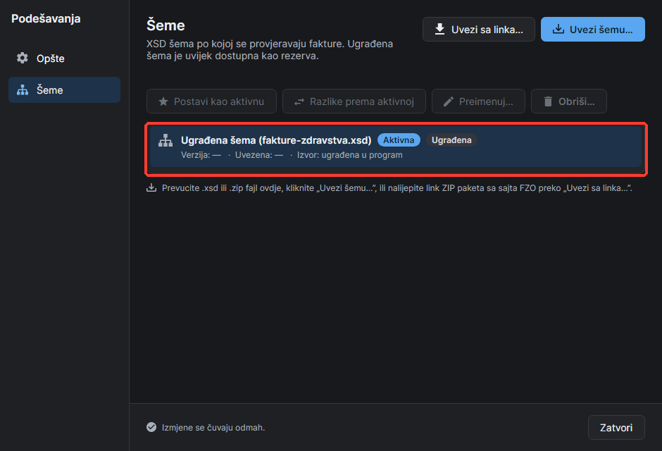
Slika 19. Lista šema sa ugrađenom šemom.
Korak 6.2 – Uvezite novu verziju šeme
Kliknite Uvezi šemu… i izaberite .xsd fajl ili .zip paket koji FZO objavljuje na svom sajtu (fajl možete i prevući na prozor).
Izaberite uvezenu šemu i kliknite Razlike prema aktivnoj da vidite šta je novo.
Kliknite Postavi kao aktivnu. Od tada se fakture provjeravaju po njoj.
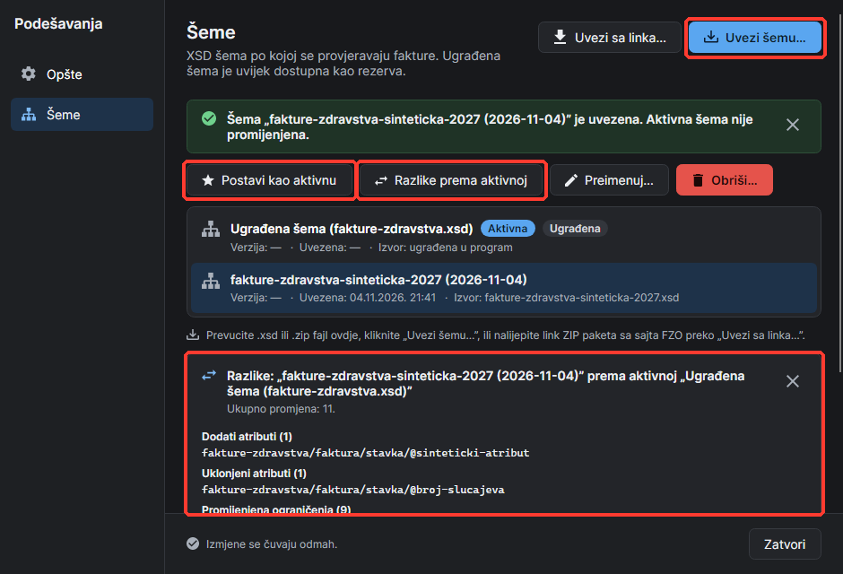
Slika 20. Uvezena šema i razlike prema aktivnoj.
Korak 6.3 – Uvoz sa linka
Kliknite Uvezi sa linka… i nalijepite adresu (https) ZIP paketa sa sajta FZO. Program preuzima paket uz prikaz napretka; Prekini zaustavlja preuzimanje. Ovo je jedina radnja u kojoj program pristupa internetu.
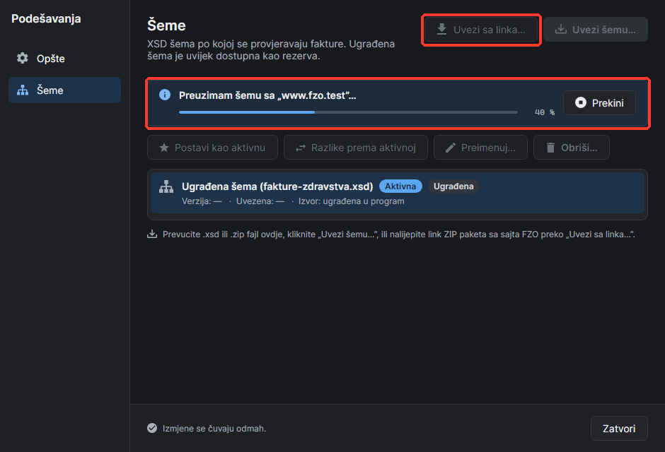
Slika 21. Preuzimanje šeme sa linka.
7. Prečice i „O programu”
Korak 7.1 – Prozor „O programu”
Kliknite ? u traci (ili F1). Prozor prikazuje verziju programa, spisak svih prečica i licence korišćenih komponenti.
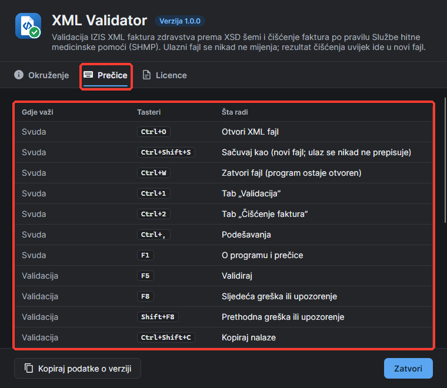
Slika 22. „O programu” sa spiskom prečica.
Prečica
Komanda
Ctrl+O
Otvori XML fajl
Ctrl+W
Zatvori fajl (program ostaje otvoren)
Ctrl+Shift+S
Sačuvaj kao (novi fajl)
Ctrl+1 / Ctrl+2
Tab „Validacija” / „Čišćenje faktura”
Ctrl+,
Podešavanja
F1
O programu i prečice
F5
Validiraj / Analiziraj (u aktivnom tabu)
F8 / Shift+F8
Sljedeća / prethodna greška
Ctrl+D
Pregled izmjena (čišćenje)
Ctrl+S
Sačuvaj očišćeni fajl
Ctrl+R
Sačuvaj izvještaj
8. Konzolni alat (za napredne korisnike)
Korak 8.1 – Čišćenje iz komandne linije
xmlvalidator-cli.exe radi isto što i program, bez prozora, npr. za obradu više fajlova odjednom. Pravila su ista: ulaz se nikad ne mijenja, a postojeći fajl se prepisuje samo uz --overwrite.
Program ispisuje svaku obrisanu fakturu i sažetak, a pravi fakture_ociscen.xml i izvještaj.
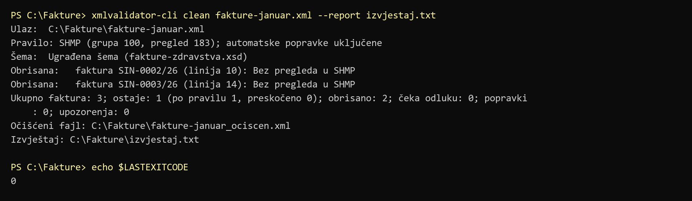
Slika 23. Čišćenje u konzoli (primjer sa sintetičkim fajlom).
Komanda / opcija
Značenje
validate fajl.xml
validacija; --report nalazi.txt čuva nalaze
clean ulaz.xml [izlaz.xml]
čišćenje; izlaz je podrazumijevano <ime>_ociscen.xml
--nomatch delete|skip|ask
akcija za fakture bez pregleda u SHMP (ask = „Prikaži”)
--empty delete|skip|ask
akcija za prazne fakture
--suspicious delete|skip
odluka za sumnjive blokove (bez nje se izlaz ne pravi)
--group 100, --exam 183|any
grupa SHMP i usluga pregleda (any = bilo koja usluga SHMP)
--mask-jmb, --overwrite
maskiranje JMB-a u izvještaju; dozvola za prepisivanje izlaza
help clean
sve opcije sa objašnjenjem
Izlazni kod: 0 = uspjeh, 1 = fajl ima greške ili izlaz nije sačuvan, 2 = pogrešni argumenti, 3 = fajl ne može da se pročita ili upiše.
Lični podaci: fakture sadrže JMB i zdravstvene podatke. Ne šaljite ulazne fajlove ni izvještaje sa punim JMB-om van ustanove; za dijeljenje koristite opciju „Maskiraj JMB u izvještaju”.